소음진동산업기사 (2009-05-10 기출문제)
1과목: 소음진동개론
1. 음의 레벨에 관한 설명으로 가장 거리가 먼 것은?
- 1기압, 15℃ 정도에서 음파가 장애물이 없는 공간상에서 자유진행 될 때에는 음압레벨과 음세기레벨은 같다고 볼 수 있다.
- 음압이 2배로 되면 음압레벨은 6dB 증가하며, 10배로 되면 20dB 증가한다.
- 0dB의 음압레벨은 음압 10μPa의 소리를 뜻한다.
- 음향파워비가 10배씩 증가할 때마다 음향파워레벨은 10dB씩 증가한다.
(정답률: 알수없음)

2. 인체의 청각기관에 대한 다음 설명 중 가장 거리가 먼 것은?
- 고막은 다소 둥근형의 얇은 막으로 마이크로폰의 진동판과 같은 역할을 한다.
- 타원창(oval window)의 면적은 고막 면적의 약 5배 정도이나, 진동 변위는 1/2 수준이다.
- 이소골은 고막의 운동 진폭을 감소시키며, 그 대신 진동력을 15~20배 정도 확대시켜 타원창에 전달하기도 하고, 경우에 따라 감소시키기도 한다.
- 고막의 진동은 망치뼈, 모루뼈, 등자뼈를 통하여 내이(inner ear)에 있는 타원창에 진동을 전달한다.
(정답률: 알수없음)
3. 소음평가지수 NRN(Noise Rating Number)에 관한 다음 설명 중 가장 거리가 먼 것은?
- 소음피해에 대한 주민들의 반응은 NRN으로 40이하이면 보통 주민반응이 없는 것으로 판단할 수 있다.
- 순음성분이 많은 경우에는 NR보정값은 +5dB이다.
- 반복성 연속음의 경우에는 NR보정값은 +3dB이다.
- 습관이 안된 소음에 대해서는 NR보정값은 0이다.
(정답률: 알수없음)
4. 배 위에서 작업하고 있던 인부가 물 속에 있는 작업자에게 큰 소리로 외쳤을 때 음파의 입사각은 60℃, 굴절각은 30° 였다. 이 때의 굴절률은?
- √1/3
- √2/3
- 1
- √3
(정답률: 알수없음)
5. 실효압력이 0.25N/m2일 때 실내 평균음향 에너지 밀도(J/m3)는? (단, ρC=411rayls, c=346m/s 이다.)
- 2.4 x 10-5
- 4.4 x 10-7
- 6.1 x 10-8
- 8.9 x 10-9
(정답률: 알수없음)
6. 에어컨을 가동하기 전의 실내음압레벨이 68dB, 에어컨이 가동될 때의 음압레벨이 78dB이면 에어컨만의 음압레벨은?
- 약 70 dB
- 약 73 dB
- 약 75 dB
- 약 78 dB
(정답률: 알수없음)
7. 하나의 파면상의 모든 점이 파원이 되어 각각 2차적인 구면파를 사출하여 그 파면들을 둘러싸는 면이 새로운 파면을 만드는 현상(원리)은?
- Weber-Fechner 현상
- White noise 현상
- Doppler 현상
- Huyghens 원리
(정답률: 알수없음)
8. 다음 중 주파수 범위에 따른 인체에 대한 영향으로 가장 거리가 먼 것은?
- 머리에서 가장 큰 진동을 느끼는 주파수는 13Hz 정도이다.
- 대소변을 보고 싶고, 무릎에 탄력감이나 땀이 난다거나 열나는 느낌을 받는 주파수 범위는 9~20Hz 정도이다.
- 배 속의 음식물이 심하게 오르락내리락 함을 느끼고, 발성에 영향을 주는 주파수 범위는 12~16Hz 정도이다.
- 허리ㆍ가슴 및 등 쪽에 가장 심한 통증을 느끼는 주파수 범위는 25~30Hz 정도이다.
(정답률: 알수없음)
9. 자유공간에서 지향성음원의 지향계수가 2 이고, 음원의 음향 파워레벨이 122dB인 경우, 이 음원으로부터 25m 떨어진 지향점에서의 음에너지 밀도(J/m3)는? (단, 음속은 344m/s 이다.)
- 1.17 x 10-6
- 1.97 x 10-6
- 2.17 x 10-6
- 3.17 x 10-6
(정답률: 알수없음)
10. 공기 밀도 및 음속이 1.18kg/m3, 340m/s 이고, 공기 중의 피이크(peak) 입자속도가 5.58 x 10-3m/s일 때, 음압레벨은 약 몇 dB인가?
- 92 dB
- 98 dB
- 101 dB
- 104 dB
(정답률: 알수없음)
11. 다음은 정현파의 음압진폭 Pm(peak 값)과 음압 실효치 P(rms 값)의 관계를 나타낸 것이다. 틀린 것은?
- P=Pmㆍtan45°
- P=Pmㆍsin45°
- P=Pmㆍcos45°
- P=Pmㆍ21/2
(정답률: 알수없음)
12. 반사율 1인 바닥 위에 있는 점음원을 중심으로 반경 5.5m의 반구면상의 음의 세기가 6.8 x 10-4 W/m2일 때, 이 점음원의 음향출력(acoustic power)은?
- 0.04 W
- 0.09 W
- 0.13 W
- 0.18 W
(정답률: 알수없음)
13. 진동변위 X = A sin(ωㆍt)로 나타낼 때, 진동속도를 바르게 나타낸 것은? (단, X는 t에 대한 진동변위, A는 변위진폭, ω는 각진동수, t는 시간, Vm은 진동속도이다.)
- Vm=ωㆍA sin (ωㆍt)
- Vm=ωㆍA cos (ㆍt)
- Vm=ω sin (ωㆍt)
- Vm=ω cos (ωㆍt)
(정답률: 알수없음)
14. 도로변에서 측정한 소음도가 L10=73dB(A), L50=62dB(A), L90=53dB(A) 일 때, 소음공해레벨은? (단, 순간레벨의 분포가 정규레벨에 가깝다고 본다.)
- 약 78 dB(NP)
- 약 80 dB(NP)
- 약 83 dB(NP)
- 약 89 dB(NP)
(정답률: 알수없음)
15. 음의 세기 I(①)와 음압실효치 P(②)와의 관계로 옳은 것은? (단, 대기조건은 15℃, 1기압으로 한다.)
- ① 8.6 x 10-6(W/m2), ② 6 x 10-2(N/m2)
- ① 7.6 x 10-6(W/m2), ② 5 x 10-3(N/m2)
- ① 7.2 x 10-7(W/m2), ② 4 x 10-3(N/m2)
- ① 6.1 x 10-8(W/m2), ② 3 x 10-3(N/m2)
(정답률: 알수없음)
16. 공기중에서 음의 전파속도(음속)에 관한 다음 설명으로 옳은 것은?
- 음속은 절대온도의 제곱근에 비례한다.
- 음속은 절대온도의 2승에 비례한다.
- 음속은 절대온도의 2승에 반비례한다.
- 음속은 절대온도의 제곱근에 반비례한다.
(정답률: 알수없음)
17. 소음이 작업능률에 미치는 일반적인 영향으로 가장 거리가 먼 것은?
- 소음은 작업의 정밀도의 저하보다는 총 작업량을 저하시키기 쉽다.
- 1000 ~ 2000 Hz 이상의 고주파역 소음은 저주파역 소음 보다 작업방해를 크게 야기시킨다.
- 복잡한 작업은 단순작업보다 소음에 의해 나쁜 영향을 받기 쉽다.
- 특정음이 없는 일정소음이 90dB(A)를 초과하지 않을 때는 작업을 방해하지 않는 것으로 보인다.
(정답률: 알수없음)
18. 평균음압이 3450Pa이고 특정지향음압이 5450Pa일 때 지향계수는?
- 5.5
- 4.0
- 3.5
- 2.5
(정답률: 알수없음)
19. 10℃ 공기중에서 파장이 0.5m 인 음의 주파수는?
- 약 675 Hz
- 약 685 Hz
- 약 689 Hz
- 약 694 Hz
(정답률: 알수없음)
20. 40phon의 소리와 60phon의 소리가 합치면 몇 sone의 크기로 들리는가?
- 2.5 sone
- 5 sone
- 16 sone
- 64 sone
(정답률: 알수없음)
2과목: 소음진동 공정시험 기준
21. 다음 중 측정소음도와 배경소음도의 차 (①)에 대한 보정치(②)의 연결로 옳은 것은? (단, 단위는 dB(A))
- ① 3, ② -2
- ① 4, ② -2
- ① 6, ② -2
- ① 5, ② -3
(정답률: 알수없음)
22. 측정진동레벨이 67dB(V)이고, 배경진동레벨이 62dB(V) 일 때 대상진동레벨은?
- 67 dB(V)
- 66 dB(V)
- 65 dB(V)
- 64 dB(V)
(정답률: 알수없음)
23. 소음ㆍ진동 환경오염공정시험기준상 진동과 관련한 용어의 정의로 옳지 않은 것은?
- 정상진동 : 시간적으로 변동하지 아니하거나 또는 변동폭이 작은 진동을 말한다.
- 평가진동레벨 : 측정진동레벨에 관련시간대에 대한 측정진동레벨 발생시간의 백분율, 시간별, 지역별 등의 보정치를 보정한 후 얻어진 진동레벨을 말한다.
- 충격진동 : 단조기의 사용, 폭약의 발파시 등과 같이 극히 짧은 시간 동안에 발생하는 높은 세기의 진동을 말한다.
- 진동레벨 : 진동레벨의 감각보정회로(수직)를 통하여 측정한 진동가속도레벨의 지시치를 말한다.
(정답률: 알수없음)
24. 생활진동 규제기준 측정을 위한 측정조건 등에 관한 설명으로 옳지 않은 것은?
- 사용 진동레벨계는 KSC-1502에 정한 진동레벨계 또는 동등이상의 성능을 가진 것이어야 한다.
- 진동레벨계의 감각보정회로는 별도 규정이 없는 한 V특성(수직)에 고정하여 측정하여야 한다.
- 진동레벨계는 매회 교정을 실시하여야 한다.
- 적절한 측정시각에 2지점 이상의 측정지점수를 선정ㆍ측정하여 그중 높은 진동레벨을 측정진동레벨로 한다.
(정답률: 알수없음)
25. 진동 배출허용기준측정시 디지털 진동자동분석계를 사용할 경우 측정진동레벨을 정하는 기준으로 옳은 것은?
- 5분이상 측정ㆍ기록하여 기록지상의 지시치에 변동이 없을 때에는 그 지시치
- 5분이상 측정ㆍ기록하여 기록지상의 지시치의 변동폭이 5dB이내일 때에는 구간내 최대치로부터 진동레벨의 크기순으로 10개를 산술평균한 진동레벨
- 샘플주기를 1초이내에서 결정하고 5분이상 측정하여 자동 연산ㆍ기록한 80% 범위의 상단치인 L10값
- 샘플주기를 0.1초이내에서 결정하고 10분이상 측정하여 자동 연산ㆍ기록한 80% 범위의 상단치인 L10값
(정답률: 알수없음)
26. 생활소음 규제기준 측정방법 중 소음도 기록기를 사용하여 5분 이상 측정ㆍ기록한 기록지상의 지시치가 불규칙하고 대폭적으로 변하는 경우 측정소음도로 정하는 기준은?
- 최대치부터 소음도의 크기 순으로 10개를 택하여 산술평균한 소음도
- 50회 판독ㆍ기록한 지시치의 산술평균 소음도
- 변화폭의 중간소음도
- 임의의 지시치 10개의 산술평균 소음도
(정답률: 알수없음)
27. A공장에서 발생한 소음을 측정하여 아래와 같은 결과를 얻었다면 이 지점의 등가소음도는?
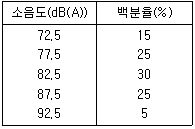
- 78.6 dB(A)
- 82.5 dB(A)
- 84.8 dB(A)
- 87.6 dB(A)
(정답률: 알수없음)
28. 소음ㆍ진동 환경오염공정시험기준상 각 소음도에 관한 용어의 정의 중 옳은 것은?
- 등가소음도 : 규제소음도에 배경소음을 보정한 후 얻어진 소음도를 말한다.
- 측정소음도 : 평가소음도에 배경소음을 보정한 후 얻어진 소음도를 말한다.
- 대상소음도 : 측정소음도에 배경소음을 보정한 후 얻어진 소음도를 말한다.
- 평가소음도 : 등가소음도에 배경소음을 보정한 후 얻어진 소음도를 말한다.
(정답률: 알수없음)
29. 다음 중 동일건물 내 사업장소음 규제기준 측정방법으로 가장 거리가 먼 것은? (단, 예외사항 제외)
- 피해가 예상되는 실에서 소음도가 높을 것으로 예상되는 지점의 바닥 위 1.2 m ~1.5 m 높이로 한다.
- 소음계의 청감보정회로는 A특성에 고정하고, 소음계의 동특성은 원칙적으로 빠름(fast)을 사용하여 측정하여야 한다.
- 사용 소음계는 KS C IEC 61672-1에서 정한 클래스 2 소음계 또는 동등 이상의 성능을 가진 것이어야 한다.
- 적절한 측정시간에 4지점 이상의 측정지점수를 선정하고 각각 4회 이상 측정하여 각 지점에서 산술 평균한 소음도 중 가장 높은 소음도를 측정 소음도로 한다.
(정답률: 알수없음)
30. 다음은 소음계의 성능기준이다. ( )안에 가장 알맞은 것은?
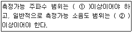
- ① 31.5 Hz ~ 8000 Hz, ② 45 ~ 120 dB
- ① 8 Hz ~ 31.5 Hz, ② 45 ~ 120 dB
- ① 8 Hz ~ 31.5 Hz, ② 35 ~ 130 dB
- ① 31.5 Hz ~ 8000 Hz, ② 35 ~ 130 dB
(정답률: 알수없음)
31. 진동레벨계의 성능기준에 관한 설명 중 옳지 않은 것은?
- 측정가능 진동레벨의 범위는 45~120 dB이상이어야 한다.
- 레벨렌지 변환기가 있는 기기에 있어서 레벨렌지 변환기의 전환오차가 1 dB이내이어야 한다.
- 지시계기의 눈금오차는 0.5 dB이내이어야 한다.
- 진동픽업의 횡감도는 규정주파수에서 수감축 감도에 대한 차이가 15 dB이상이어야 한다.(연직특성)
(정답률: 알수없음)
32. 다음은 마이크로폰의 특성에 관한 설명이다.( )안에 가장 적합한 것은?
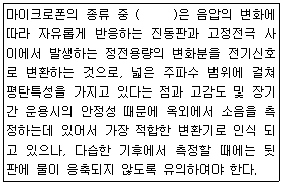
- 콘덴서형
- 압전형
- 동전형
- 리본형
(정답률: 알수없음)
33. 소음의 환경기준 측정조건으로 틀린 것은?
- 소음계의 마이크로폰은 측정위치에 받침장치를 설치하여 측정하는 것을 원칙으로 한다.
- 손으로 소음계를 잡고 측정할 경우 소음계는 측정자의 몸으로부터 0.5m 이상 떨어져야 한다.
- 풍속이 5 m/sec를 초과할 시에는 반드시 마이크로폰에 방풍망을 부착하여 측정한다.
- 요일별로 소음변동이 적은 평일에 당해지역의 환경소음을 측정하여야 한다.
(정답률: 알수없음)
34. 표준음발생기에 관한 다음 설명 중 ( )안에 가장 알맞은 것은?
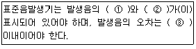
- ① 주파수, ② 음압도, ③±0.1 dB
- ① 주파수, ② 음압도, ③±1 dB
- ① 세기, ② 파장, ③±0.1 dB
- ① 세기, ② 파장, ③±1 dB
(정답률: 알수없음)
35. 소음계를 기본구조와 부속장치로 구분할 때 다음 중 부속장치에 해당하지 않는 것은?
- anti-wind screen
- tripod
- amplifier
- pistomphone, calibrator
(정답률: 알수없음)
36. 소음의 환경기준 측정시 정한 밤시간대의 범위로 옳은 것은?
- 18:00 ~ 06:00
- 20:00 ~ 04:00
- 22:00 ~ 06:00
- 24:00 ~ 06:00
(정답률: 알수없음)
37. 다음 중 보정치(-1dB(A) ~ -3dB(A))가 필요한 경우는 측정소음도와 배경소음도와의 차이가 얼마의 범위일 때인가?
- 0~12 dB(A)
- 1~11 dB(A)
- 2~10 dB(A)
- 3~9 dB(A)
(정답률: 알수없음)
38. 생활소음 규제기준 측정시 측정시각 및 측정지점수에 따른 측정소음도 선정기준으로 옳은 것은?
- 적절한 측정시각에 2지점 이상의 측정지점수를 선정ㆍ측정하여 그중 가장 높은 소음도를 측정소음도로 한다.
- 적절한 측정시각에 4지점 이상의 측정지점수를 선정하고 각각 4회 이상 측정하여 각 지점에서 산술평균한 소음도 중 가장 높은 소음도를 측정소음도로 한다.
- 낮시간대에는 당해지역 소음을 대표할 수 있도록 측정지점수를 충분히 결정하고, 각 측정지점에서 2시간이상 간격으로 4회 이상 측정하여 산술평균한 값을 측정소음도로 한다.
- 각 시간대별로 최대소음이 예상되는 시각에 1지점 이상의 측점지점수를 선정하여 측정소음도로 한다.
(정답률: 알수없음)
39. 철도 소음한도측정에 관한 설명으로 틀린 것은?
- 소음계의 청감보정회로는 C특성에 고정하여 측정한다.
- 소음계의 동특성은 빠름으로 하여 측정한다.
- 요일별로 소음변동이 적은 월요일부터 금요일 사이에 당해지역의 철도소음을 측정한다.
- 밤시간대는 1회 1시간 동안 측정한다.
(정답률: 알수없음)
40. 다음은 진동레벨계의 기본구성 중 무엇의 성능기준에 관한 설명인가?
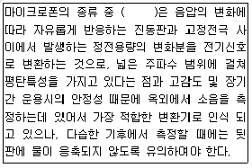
- 레벨렌진 변환기(attenuator)
- 진동픽업(pick-up)
- 감각보정회로(weighting networks)
- 교정장치(calibration network calibrator)
(정답률: 알수없음)
3과목: 소음진동방지기술
41. 강제진동에서 감쇠비가 0 인 경우, 전달률이 1 이 되는 진동수비
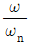
의 값은?- 1
- √2
- 2
- √5
(정답률: 알수없음)
42. 금속스프링에서 주로 가 되는 것으로 스프링 자체의 탄성 진동의 고유진동수가 외력의 진동수와 공진하는 상태를 무엇이라 하는가?
- 서어징
- 로킹
- 래깅
- 댐핑
(정답률: 알수없음)
43. 다음 중 원통코일스프링의 스프링 정수에 관한 설명으로 옳은 것은?
- 스프링 정수는 평균코일 직경에 비례한다.
- 스프링 정수는 평균코일 직경에 반비례한다.
- 스프링 정수는 평균코일 직경의 제곱에 비례한다.
- 스프링 정수는 평균코일 직경의 세제곱에 반비례한다.
(정답률: 알수없음)
44. 각 소음기에 관한 설명으로 옳지 않은 것은?
- 흡음덕트형 소음기는 급격한 관경확대로 유속을 낮추어 감음하는 방식으로 저ㆍ중음역에서 감음특성이 좋다.
- 팽창형 소음기의 감음특성은 저ㆍ중음역에 유효하고, 팽창부에 흡음재를 부착하면 고음역의 감음량도 증가한다.
- 간섭형 소음기는 음의 통로 구간을 둘로 나누어 그 경로차가 반파장에 가깝게 하는 구조이다.
- 공명형 소음기는 내관의 작은 구멍과 그 배후 공기층이 공명기를 형성하여 감음하는 방식으로 감음특성은 저ㆍ중음역의 탁월주파수 성분에 유효하다.
(정답률: 알수없음)
45. 스프링에 매달려 있는 한 질량체가 주파수 10Hz, 진폭 5mm 로 진동할 때 질량체의 속도진폭은?
- 0.3 m/sec
- 0.6 m/sec
- 1.0 m/sec
- 1.3 m/sec
(정답률: 알수없음)
46. 다음 중 감음계수(NRC) 계산에 포함되지 않는 1/3 옥타브 대역의 중심주파수는?
- 2 kHz
- 125 Hz
- 500 Hz
- 1000 Hz
(정답률: 알수없음)
47. 자유공간내에서 소음의 거리감쇠에 대한 다음 설명 중 옳지 않은 것은? (단, 선음원은 무한 길이 선음원으로 본다. )
- 점음원인 경우 거리가 2배로 되면 약 6dB 감쇠한다.
- 점음원인 경우 거리가 10배로 되면 약 20dB 감쇠한다.
- 선음원인 경우 거리가 10배로 되면 약 10dB 감쇠한다.
- 선음원인 경우 거리가 5배로 되면 약 5dB 감쇠한다.
(정답률: 알수없음)
48. 다음 중 단위로서 폰(phon)을 사용하는 것은?
- 옥타브밴드대역 음압레벨
- 소음레벨
- 음향의 파워레벨
- 음의 크기레벨
(정답률: 알수없음)
49. 단일 벽면에 일정 주파수의 순음이 난입사한다. 이 벽의 면밀도가 원래의 2배가 되고, 입사 주파수는 원래의 1/2로 변화된 때 투과손실의 변화량은? (단, 다른 조건은 동일하다고 간주한다.)
- 변화없음
- 3 dB 증가
- 3 dB 감소
- 6 dB 증가
(정답률: 알수없음)
50. 진동원에거 10m 떨어진 지점에서 진동레벨이 80dB라 할 때, 50m 떨어진 지점의 진동레벨(dB)은? (단, 지반전파의 감쇠정수 λ=0.⑤, 표면파(n=0.5)이다.)
- 45.2 dB
- 49.8 dB
- 55.6 dB
- 62.7 dB
(정답률: 알수없음)
51. 다음 중 난입사 흡음율 측정법으로 실제 이 흡음율에 의한 방법이 주로 현장에 이용되는 것은?
- 공명법
- 잔향실법
- 관내법
- 정재파법
(정답률: 알수없음)
52.
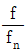
비와 진동전달률과의 관계에 대한 설명으로 틀린 것은? 인 경우 차진이 유효한 영역이다.
인 경우 차진이 유효한 영역이다. 일 때 진동전달력은 외력과 같다.
일 때 진동전달력은 외력과 같다. 인 경우 항상 진동전달력은 외력보다 크다.
인 경우 항상 진동전달력은 외력보다 크다. 인 경우 진동전달률은 최소이다.
인 경우 진동전달률은 최소이다.
(정답률: 알수없음)
53. 실용적 V=2000m3, 표면적 S=800m3 인 공장내에서 500Hz의 잔향시간을 측정해보니 1.1초였다. 평균 흡음율은?
- 0.09
- 0.13
- 0.25
- 0.37
(정답률: 알수없음)
54. 진동하는 금속면을 고무로 제진하였다. 이 때 두 면에서의 파동에너지의 반사율이 90% 이였을 때 진동감쇠량은?
- 20 dB
- 15 dB
- 10 dB
- 5 dB
(정답률: 알수없음)
55. 진동이 큰 기계로부터 20m 떨어진 지점에 정밀기계가 있다. 현재 정밀기계에 미치는 진동의 영향을 지금 보다 10dB 정도 낮추고자 할 때, 다음 방지대책 중 가장 거리가 먼 것은?
- 정밀기계를 방진지지로 한다.
- 진동원의 기계를 방진지지로 한다.
- 두 기계의 중앙선상에 깊이 30cm 정도의 빈도량을 만든다.
- 진동원의 기계를 진동이 작은 것으로 교환한다.
(정답률: 알수없음)
56. 어떤 스프링에 질량 m의 물체를 매어 달았을 때 8만큼의 정적변위가 생겼다. 이 시스템의 교유진동수는? (단, g는 중력가속도를 나타낸다.)
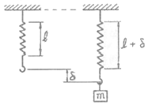
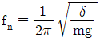
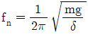
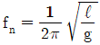
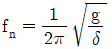
(정답률: 알수없음)
57. 교실의 단일벽 면밀도가 200kg/m2 이였다. 여기에 100Hz 순음이 입사할 때의 단일벽의 투과손실은? (단, 음파는 벽면에 난입사한다. )
- 24 dB
- 27 dB
- 33 dB
- 43 dB
(정답률: 알수없음)
58. 다음 중 고체음의 소음저감 대책으로 거리가 먼 것은?
- 가진력 억제
- 방사면 축소 및 제진처리
- 공명방지
- 벨브의 다단화
(정답률: 알수없음)
59. 지반을 전파하는 파에 관한 설명으로 옳지 않은 것은?
- P파는 압력파 또는 소밀파라고도 하며, 전파속도가 R파, S파보다 크다.
- 탄성파는 전파방법에 따라 암반내부를 전파하는 P파, S파, 지면은 전파하는 표면파인 R파(레일리파) 등으로 구분할 수 있다.
- 발파진동 분석을 위해서는 여러 성분을 측정해야 하는데 일반적으로 진행성분에는 P파가, 접선성분에는 S파가, 수직성분에는 R파가 우세한 것으로 알려져 있다.
- R파는 P파와 S파에 비해 전파속도는 느리나 상대적으로 고주파 진동으로 진폭의 감쇠는 크다.
(정답률: 알수없음)
60. 다음 중 소음해결을 위한 소음대책의 일반적인 순서의 흐름으로 가장 적합한 것은?
- 귀로 판단 - 계기에 의한 측정 - 규제기준 확인 - 적정방지기술 선정 - 시공 및 재평가
- 귀로 판단 - 계기에 의한 측정 - 적정 방지기술 선정 - 규제기준 확인 - 시공 및 재평가
- 계기에 의한 측정 - 적정 방지기술 선정 - 대책의 목표치 설정 - 귀로 판단 - 시공 및 재평가
- 계기에 의한 측정 - 대책의 목표치 설정 - 적정 방지기술 선정 - 귀로 판단 - 시공 및 재평가
(정답률: 알수없음)
4과목: 소음진동방지기술
61. 소음진동규제법규상 소음배출시설기준에 해당되지 않는 것은?
- 자동제병기
- 석재절단기(동력 사용시 10마력 이상으로 한정)
- 낙하해머의 무게가 0.5톤 이상의 단조기
- 10마력 이상의 원심분리기
(정답률: 알수없음)
62. 소음진동규제법상 교통기관에 속하지 않는 것은?
- 기차
- 전차
- 자동차
- 항공기
(정답률: 알수없음)
63. 소음진동규제법규상 생활소음 규제기준치 보정에 관한 설명이다. ( )안에 알맞은 것은?
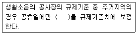
- -3 dB
- -5 dB
- -10 dB
- -15 dB
(정답률: 알수없음)
64. 소음진공규제법령상 인증을 면제할 수 있는 자동차의 경우에 해당하는 것은?
- 외국에서 국내의 비영리단체에 무상으로 기증하여 반입하는 자동차
- 항공기 지상조업용으로 반입하는 자동차
- 관세법에 따라 공매되는 자동차로서 환경부장관이 정하여 고시하는 자동차
- 외국에서 1년 이상 거주한 자가 주거를 이전하기 위하여 이주물품으로 반입하는 1대의 자동차
(정답률: 알수없음)
65. 소음진동규제법규상 환경기술인의 교육기관에 관한 규정이다. ( )안에 가장 적합한 것은?
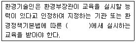
- 지방 환경청
- 시ㆍ도 보건환경연구원
- 환경보전협회
- 국립환경과학원
(정답률: 알수없음)
66. 소음진동규제법규상 소음진동배출시설 가동개시신고를 위해 제출할 서류로 가장 거리가 먼 것은?
- 배출시설 설치신고증명서
- 배출시설 설치허가증
- 배출시설 설치내역서
- 소음ㆍ진동배출시설 가동개시신고서
(정답률: 알수없음)
67. 소음진동규제법규상 환경부장관의 인증을 받은 자동차에 대한 인증변경 신청시 첨부하여야 할 서류로 거리가 먼 것은?
- 자동차 주행기록부
- 변경된 인증내용에 대한 설명서
- 자동차 제원명세서
- 인증 내용 변경 전ㆍ후의 소음변화에 대한 검토서
(정답률: 알수없음)
68. 소음진동규제법상 벌칙기준 중 1년 이하의 징역 또는 500만원 이하의 벌금에 처하는 경우가 아닌 것은?
- 운행차의 소음허용기준을 초과하여 받은 개선명령을 위반한 경우
- 배출시설 설치허가 대상자가 허가를 받지 아니하고 배출시설을 설치한 경우
- 배출허용기준초과와 관련하여 받은 개선명령의 미이행으로 받은 조업정지명령을 위반한 경우
- 생활소음ㆍ진동 규제기준치 초과와 관련하여 받은 조치 명령의 미이행으로 받은 해당공사 중지명령을 위반한 경우
(정답률: 알수없음)
69. 소음진동규제법규상 자연환경보전지역의 야간(22:00~⑤:00) 공사장 생활소음 규제기준은? (단, 보정치는 고려하지 않는다.)
- 45 dB(A) 이하
- 50 dB(A) 이하
- 55 dB(A) 이하
- 60 dB(A) 이하
(정답률: 알수없음)
70. 환경정책기본법령상 도로변지역 밤시간대의 소음환경기준으로 옳은 것은? (단, 적용대상지역은 주거지역 중 전용주거지역이며, 시간은 이 법령기준에 의한 밤시간대로 한다.)
- 40 Leq dB(A)
- 45 Leq dB(A)
- 50 Leq dB(A)
- 55 Leq dB(A)
(정답률: 알수없음)
71. 소음진동규제법규상 시장ㆍ군수ㆍ구청장이 소음ㆍ진동 검사를 의뢰할 수 있는 기관으로 거리가 먼 것은?
- 국립환경과학원
- 충청북도 보건환경연구원
- 환경관리공단
- 대구유역환경청
(정답률: 알수없음)
72. 소음진동규제법규상 운행차의 소음이 운행차 소음허용기준을 초과한 경우 그 자동차 소유자에 대하여 개선을 명할 수 있는데, 개선에 필요한 기간은 개선 명령일부터 며칠로 하는가?
- 5일
- 7일
- 15일
- 30일
(정답률: 알수없음)
73. 소음진동규제법규상 시ㆍ도지사는 매년 주요 소음ㆍ진동 관리시책의 추진 상황에 관한 보고서를 환경부장관에게 제출하여야 하는데, 그 보고서 내용에 포함될 내용으로 가장 거리가 먼 것은?
- 소음ㆍ진동의 행정지원 및 단속 실적
- 소요 재원의 확보계획
- 소음ㆍ진동 발생원 및 소음ㆍ진동 현황
- 소음ㆍ진동 저감대책 추진실적 및 추진계획
(정답률: 알수없음)
74. 소음진동규제법상 확인검사대행자 등록의 결격사유 기준으로 틀린 것은?
- 확인검사대행자의 등록이 취소된 후 3년이 지나지 아니한 자
- 임원 중 파산선고를 받고 복권되지 아니한 자가 있는 법인
- 소음진동규제법을 위반하여 징역의 실형을 선고받고 그 형의 집행이 종료되거나 집행을 받지 아니하기로 확정된 후 2년이 지나지 아니한 자
- 수질 및 수생태계 보전에 관한 법률을 위반하여 징역의 실형을 선고받고 그 형의 집행이 종료되거나 집행을 받지 아니하기로 확정된 후 2년이 지나지 아니한 자
(정답률: 알수없음)
75. 소음진동규제법규상 원동기출력 97.5마력 이하인 대형 화물자동차의 제작자동차 배기소음허용기준으로 옳은 것은? (단, 2006년 1월 1일 이후에 제작되는 자동차)
- 100 dB(A) 이하
- 103 dB(A) 이하
- 1⑤ dB(A) 이하
- 110 dB(A) 이하
(정답률: 알수없음)
76. 소음진동규제법규상 생활소음ㆍ진동의 규제기준에 관한 설명으로 거리가 먼 것은?
- 공사장의 소음 규제기준은 주간의 경우 특정공사의 사전신고 대상 기계ㆍ장비를 사용하는 작업시간이 1일 3시간 초과 6시간 이하일때는 +5dB을 규제기준치에 보정한다.
- 발파소음의 경우 주간에만 규제기준치(광산의 경우 사업장 규제기준)에 +5dB을 보정한다.
- 옥외에 설치한 확성기의 사용은 1회 3분 이내로 하여야 하고, 15분 이상의 간격을 두어야 한다.
- 규제 기준치는 생활소음의 영향이 미치는 대상 지역을 기준으로 하여 적용한다.
(정답률: 알수없음)
77. 소음진동규제법규상 동력을 사용하는 시설 및 기계ㆍ기구에 속하는 진동배출시설기준에 해당하지 않는 것은?
- 2대 이상 시멘트벽돌 및 블록의 제조기계
- 유압식을 제외한 20마력 이상의 프레스
- 파쇄기와 마쇄기를 포함한 30마력 이상의 분쇄기
- 압출ㆍ사출을 포함한 50마력 이상의 성형기
(정답률: 알수없음)
78. 소음진동규제법규상 규정에 의한 환경기술인을 임명하지 아니한 경우 행정처분기준의 순서로 옳은 것은? (단, 1차 - 2차 - 3차 - 4차 위반순임)
- 경고 - 조업정지 5일 - 조업정지 10일 - 조업정지 30일
- 경고 - 조업정지 10일 - 조업정지 30일 - 허가취소
- 환경기술인 선임명령 - 경고 - 조업정지 5일 - 조 업정지 10일
- 환경기술인 선임명령 - 조업정지 5일 - 조업정지10일 - 경고
(정답률: 알수없음)
79. 소음진동규제법령상 배출시설의 설치신고 또는 설치허가대상에서 제외되는 지역에 해당하지 않는 것은? (단, 시ㆍ도지사가 환경부장관의 승인을 받아 지정ㆍ고시한 지역은 제외)
- 산업입지 및 개발에 관한 법률 규정에 따른 산업 단지
- 국토기본법 규정에 따른 용도계획 관리지역
- 자유무역지역의 지정 및 운영에 관한 법률 규정에 따라 지정된 자유무역지역
- 국토의 계획 및 이용에 관한 법률 시행령 규정에 따라 지정된 전용공업지역
(정답률: 알수없음)
80. 소음진동규제법규상 교육기관의 장이 다음 해의 교육계획을 환경부장관에게 제출하여 승인을 받아야하는 기간 기준(①)과 환경기술인의 교육기간기준(②)으로 옳은 것은? (단, 규정에 의한 교육기관에 한하고, 정보통신매체 를 이용하여 원격 교육을 실시하는 경우는 제외한다.)
- ① 매년 11월 30일까지, ② 5일 이내
- ① 매년 11월 30일까지, ② 7일 이내
- ① 매년 12월 31일까지, ② 5일 이내
- ① 매년 12월 31일까지, ② 7일 이내
(정답률: 알수없음)